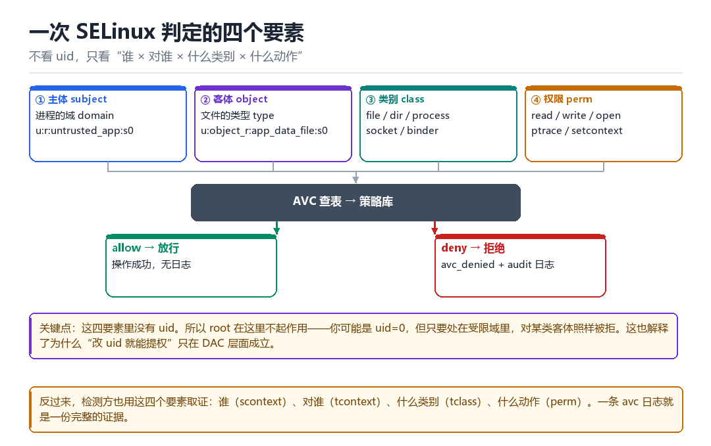

K08
SELinux 安全模型
从 domain 到 avc：Android 的第二套权限系统
DAC 管“你是谁”，MAC 管“你被允许做什么”——root 只赢第一场。

8.1 为什么需要第二套权限系统
DAC（自主访问控制）的模型是：文件有属主、有权限位，uid=0 可以无视一切。这在单用户时代够用，但在手机上是灾难——只要有任意一个进程拿到 root，整个系统就全开了。
SELinux 是 MAC（强制访问控制）：它不看 uid，只看“主体处在哪个域”与“客体是什么类型”，然后查策略表决定允不允许。关键在于：这套判定 root 也绕不过去。
| 机制 | 依据 | root 能否绕过 | 典型表现 |
|---|---|---|---|
| DAC | uid / gid + 权限位 | 能 | chmod / chown 即可 |
| MAC（SELinux） | domain × type × class × perm | 不能 | avc: denied |
8.2 四个核心概念
- 主体（subject）：发起访问的进程，带着一个“域”（domain），如
untrusted_app、zygote、su。 - 客体（object）：被访问的东西，带着一个“类型”（type），如
app_data_file、system_file。 - 类别（class）：客体的种类，如
file、dir、process、socket、binder。 - 权限（perm）：具体动作，如
read、write、open、ptrace、setcontext。
一次判定的完整表达就是：allow <域> <类型>:<类别> <权限>;。策略文件里成千上万行，都是这个句式。
读一条策略
allow untrusted_app app_data_file:file { open read write };
# 主体域 客体类型 类别 权限集合8.3 上下文长什么样
每个进程、每个文件都有一个“安全上下文”，格式固定为四段：user:role:type:level。日常打交道的主要是第三段 type（对进程叫 domain）。
| 对象 | 典型上下文 | 含义 |
|---|---|---|
| 普通 App 进程 | u:r:untrusted_app:s0:c512,c768 | 第三方应用的域 |
| 系统服务进程 | u:r:system_server:s0 | system_server |
| zygote | u:r:zygote:s0 | 所有 App 的父亲 |
| App 私有数据 | u:object_r:app_data_file:s0 | data/data 下的文件 |
| su | u:r:su:s0 | root 域（各方案不同） |
三条最常用的观察命令
id -Z # 当前进程的上下文
ls -Z /data/data # 文件的上下文
ps -Z -A | head -20 # 所有进程的域8.4 一次拒绝是怎么发生的
访问发生时，内核里的 SELinux 取“主体的 SID”与“客体的 SID”，先查 AVC（Access Vector Cache）；没命中就查策略库，得出允许/拒绝并把结果缓存。拒绝时走 avc_denied，同时打印 audit 日志。
一条真实的拒绝日志
avc: denied { ptrace } for pid=1234 comm="app_process"
scontext=u:r:untrusted_app:s0
tcontext=u:r:zygote:s0
tclass=process permissive=0| 字段 | 读法 | 用途 |
|---|---|---|
| { ptrace } | 被拒的权限 | 告诉你要开什么 |
| scontext | 谁（主体域） | 定位发起方 |
| tcontext | 对谁（客体类型） | 定位目标 |
| tclass | 什么类别 | 决定 allow 的写法 |
| permissive=0 | 是否宽容模式 | 0=真拒绝，1=只记录 |
8.5 三种模式与它们的痕迹
| 模式 | 行为 | 留下的痕迹 |
|---|---|---|
| Enforcing | 拒绝并记录 | avc denied + 功能失败 |
| Permissive | 允许但记录 | avc denied（permissive=1） |
| Disabled | 完全不检查 | /sys/fs/selinux 不可用 |
查看与切换
getenforce # Enforcing / Permissive / Disabled
setenforce 0 # 切 permissive（仅调试用）
setenforce 1 # 切回 enforcing8.6 Android 的域是怎么划分的
Android 的策略把进程分成若干域，粗粒度上可以这样理解：
| 域 | 谁在里面 | 权限特点 |
|---|---|---|
| init / vendor_init | PID 1 与厂商 init | 能设置属性、启动服务 |
| zygote / system_server | 框架进程 | 权限高，能跨进程操作 |
| untrusted_app | 第三方 App | 受限最严，只能碰自己的数据 |
| platform_app / system_app | 系统签名 App | 比第三方宽，但仍受限 |
| su / magisk | root 方案 | 各方案自定义，通常很宽 |
同一个 uid、不同的域，权限可以完全不同——这就是为什么“root 了还是 Permission denied”。你拿到的可能只是“uid=0 但仍在受限域里”。
8.7 与检测/对抗的关系
SELinux 在检测对抗里出现得非常频繁，因为它同时是“障碍”和“线索”：
- 作为障碍：很多注入、跨进程读取、修改系统文件的动作，都会先被 SELinux 挡住。表现为“代码没错但就是失败”。
- 作为线索：一旦有人为了绕过它而 patch 策略，就会留下痕迹——策略文件被改、
/sys/fs/selinux状态异常、或者出现大量permissive=1的日志。
| 动作 | 需要的典型权限 | 常见卡点 |
|---|---|---|
| 跨进程 ptrace | process:ptrace + process:setcontext | 域不对 |
| 读别的 App 数据 | app_data_file:file read | 被隔离 |
| 改系统分区 | system_file:file write | 只读挂载 + 类型保护 |
| 加载内核模块 | kernel:system module_load | 几乎不允许 |
8.8 两条处理路线
- 改策略：加 allow 规则，或把进程换到更宽的域。见效快，但策略改动本身是痕迹（文件被改、版本号变化、avc 日志消失）。
- 换路径：不改判定，而是“让操作发生在本来就有权限的地方”——比如把动作挪到内核态（M06），或者复用一个已有权限的进程。更干净，但实现复杂。
选择依据很简单：如果目标是“把功能跑通”，第一条路够用；如果目标是“不被发现”，第二条才是正解。
8.9 本章自测
- DAC 与 MAC 的根本区别是什么？为什么 root 绕不过 MAC？
scontext/tcontext/tclass分别指什么？- 看到
permissive=1的 avc 日志，说明什么？为什么不能当作已解决？ - 同一个 uid 的两个进程，权限为什么可能完全不同？
- 如果只能选一条路处理“被 SELinux 拒绝”，你会怎么选？依据是什么？